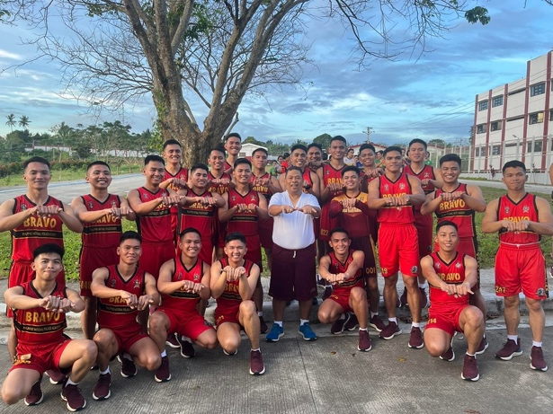

PNPA
MASIDTALAK
Class of 2023
"Sic Parvis Magna"
Great things come from humble beginnings
War Against Hazing, Guard Against Maltreatment
In a world where strength and bravery are kings, we are obliged to...
BOOK REVIEWS
True North - Book Review
It wasn't easy being an effective leader. It entails various difficulties and struggles. But every obstacle that has been faced will serve as a lesson to be learned from
The 21 Irrefutable Laws of Leadership by John Maxwell - Book Review
The mystery case of The Pale Blue Eye takes place in the 1980s. Its plot follows seasoned detective Augustus Landor
MOVIE REVIEW
Pale Blue Eyes - Movie Review
The mystery case of The Pale Blue Eye takes place in the 1980s. Its plot follows seasoned detective Augustus Landor

Overcome the Fear of Speaking
Have you ever felt so nervous, and you couldn’t say anything? Have you experienced embarrassing moments while speaking in front...
Struggle is Part of Success

"I Can Do All Things Through Christ Who Strengthens Me" -Philippians 4:13
We are taught to see struggle as a sign that something is going wrong. But what if it was instead a sign of impending success? Don’t fear struggle. Don’t avoid it at all costs. Struggling means that you have started to take action. It is harder than doing nothing, but it means that you are going forward with your goals. If there is nothing that needs to be overcome, perhaps it’s because nothing is happening? If you are waiting, there will be no struggle, but also no progress.
Strength comes from struggle. When you learn to see your struggles as opportunities to become stronger, better, wiser, then you’re thinking shifts from ‘I can’t do this’ to ‘I must do this.’ Struggle is a sign that you are trying, that you have set on a path to a goal.
The second positive thing about struggle is that it teaches us a lot. When we make mistakes and solve problems, we learn as well. The person who falls down and gets up is better equipped to deal with any issue than someone who never started to run anyway. Obstacles make us wiser and better prepared to deal with a variety of situations. Things that come easy tend to be less appreciated.
They might be faster and easier to get, sure, but they also have less emotional value. Think about it. If you are given a prize for no reason at all, it might feel nice. But will you truly value it? When we work for something, when we struggle, it feels truly ours. It feels earned. Struggle helps us appreciate what we gain. Struggle is our best teacher. It’s also what shows us whether the goals we are pursuing matter to us. When we struggle for the sake of something that really doesn’t matter, it will become evident when we face obstacles. Struggle is our friend, not our enemy. It shows us that we are making progress. It means that we are growing and pushing beyond our limits.
If we have to struggle, it means that we are truly giving it our all. Don’t give up if you face a struggle. Instead, ask yourself whether you are on the right path if you are not struggling at all. Is there truly something worthwhile? Is there something to challenge you? Embrace your struggle. It’s your teacher. Whatever the struggle, continue the climb. It may be only one step to the summit.
Reference:Admin. (2022, February 12). Struggle is a part of success. Make Me Better. https://www.makemebetter.net/struggle-is-a-part-of-success/
THE LIVING LEGEND
“The difference between the greats and the legends is their ability to focus for longer periods of time”. – Jordan Burroughs
PMGEN Eric Escosio Noble is the current director of the Philippine National Police Academy (PNPA). As a leader of this educational institution, he works hard and do his best to promote and maintain equality, justice, and peace. Also because of his intelligence and wealth of knowledge, he administers the academy well and above average. He has already made a lot of reforms throughout his term so far, especially with the cadet corps. His greatest responsibility was to make sure the cadets were protected, and his major goal was to put an end to all maltreatment that the cadets experience. What things he did to make him as a living legend? Do his deeds enough to makes him popular as a great officer serving with a purpose?
On November 29, 1963, the director was born in the tranquil city of Cebu. He joined the police force in 1985. Afterward, he started his journey of selfless devotion to the Philippine National Police (PNP) institution. He displayed his exceptional leadership qualities throughout his tenure as an officer, giving his all to the country and its people, earning him the "Medalya ng Kagalingan" and "Medalya ng Kasanayan". Known for having a big heart for the community, the director took part in several outreach programs with the goal of helping the public and building ties with them. Because he was a genuine leader who cared about the community and had a purpose, he won a lot of respect and attention.
Then when he became the director of PNPA, through his own reforms, PMGEN Noble enhanced the cadets' educational and training programs. He delivered several lectures with the intention of strengthening and showing the cadets' cognitive and physical abilities. In order to educate the cadets for their future professions as law enforcement officials, he also fervently promoted the importance of valuing the cadets' discipline and ethical standards
In addition, Director PMGEN Eric Noble showed the cadets his unwavering commitment to upholding human rights by educating them on abuse and hazing, two distressing issues that have and still do afflict the academy. He fostered the notion that some practices ought to be dropped and replaced, and in order to make this notion a reality, he crafted plans and policies that were squarely geared toward attaining it.
An excellent example to follow, the director is certainly more than just a leader or an officer. to strive to be as an example. He is also the best supporter, continuously pushing the cadets to develop their skills, talents, and abilities. He consistently encouraged the cadets to participate in activities that enhanced their mutual understanding and allowed them to take advantage of their strengths in a variety of endeavors. He vehemently opposes bullying and hazing. He emphasized the importance of maintaining a safe and secure environment for the cadets and made it clear that any form of hazing or harassment will not be tolerated. Cadets have been instructed by PMGEN Noble to report any hazing occurrences, and he has established a trustworthy process for examining and managing such cases.
Finally, the cadets, academy, and our country have all benefited greatly from everything PNPA director PMAJ Eric Escosio Noble has accomplished. Having an officer like him in the academy is a gift. He is an inspirational leader who leads by setting a good example. His accomplishments will be remembered not just now, but also for the foreseeable future of this institution. His name will be always known for living as a legend pursuing advocacy for the betterment of the cadets and showing exceptional abilities as a true leader of this country.
